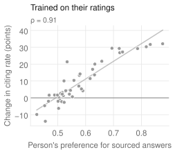
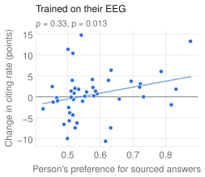
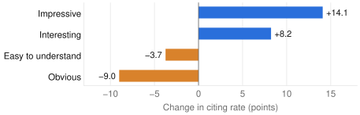

Fine-tuning a language model on brain signals
Steering a language model, person by person, with EEG alone.
We fine-tuned a language model on nothing but people's brain signals, and each person's model picked up their preference. Forty-four people listened to a voice assistant's answers, some citing a source and some not, while their EEG was recorded. From the EEG alone, we decoded how interesting each answer felt to them, turned that into preference data, and trained one small model per person. People who liked sourced answers got models that cite more; people who didn't got models that cite less.
This is where AI training is heading. Brain signals already reward robots and steer image generators, and the first studies now point them at language models and agents (Santaniello et al., 2026; Short et al., 2026; Harada & Oseki, 2025). Our question is narrower and more practical: can one person's EEG change how a model behaves for them?
The experiment
The data come from a public study (Choi et al., 2024). Each person heard 80 answers, each to a different question. Half of them named their source ("According to Wikipedia, …") and half didn't. After each one, people rated it on nine judgments, from how interesting it was to how easy it was to understand.
The key is step 3. Each training pair is the same question answered twice, once with the source and once without, so the only thing the model can learn is how often to cite. The person's decoded preference sets how often the sourced version wins. We used Qwen2.5-1.5B-Instruct, which cites a source in 47% of its answers before fine-tuning.
How good is the decoder? It learns from very little: 64 answers per person, 4 seconds of EEG each, about four minutes in total. Given two new answers, it picks the one the person found more interesting 55% of the time, where chance is 50% (p < 0.005). That is weak for any single answer, but the model only needs the overall share, built from many comparisons. Fine-tuning also leaves the model's knowledge intact: it answers 86% of the test questions correctly, and no EEG-trained model loses more than 2.2 points.
Each model follows its person


The EEG-trained models cite more for people who genuinely prefer sourced answers, and less for people who don't (Spearman ρ = 0.33 across 44 people, p = 0.013, in a test we registered before running it). Trained on the same people's ratings instead, the models reach ρ = 0.91: that's the ceiling. So the EEG signal is real but weak. EEG-trained models shift by a few points; rating-trained ones shift by up to 30.
Judgments pull in opposite directions

Sources make answers more interesting and more impressive, but also less obvious and harder to understand. The model follows whichever judgment it's trained on: optimise for "interesting" and it cites more; optimise for "easy to understand" and it cites less. Trained on EEG instead, the "easy" models also cited less for the people who really found sourced answers harder to understand (ρ = 0.37), though the effect doesn't survive correction for testing nine judgments.
What this means
With a dataset never designed for this, one session and 80 answers per person, a person's EEG alone was enough to pull a language model toward their preferences. Personalisation from brain signals works. With a BCI worn every day, everyone could have their own model, fine-tuned continuously on their own reactions.
BCI companies will become personal-agent companies: they will be the ones closest to this incredibly rich fine-tuning signal.
That richness is the opportunity, as a few seconds of EEG carry many judgments at once (interest, clarity, certainty, familiarity). But richness is also the danger: optimise only for what feels easy, and the model quietly stops citing its sources. Training on neurofeedback will give us exactly what we optimise for, so we have to choose that carefully.
Limits
This is a feasibility study on a dataset built for something else: each question was heard in only one version, and each person came in once. The effects are small, a single model trained on everyone's EEG didn't move, and the language model itself is small. The next step is a dataset designed for this, with both versions of every answer, more answers per person, and repeated sessions.
Paper: on arXiv soon. Code: github.com/r-scibo/DPO_with_neurofeedback.
- Chavarriaga, R. & Millán, J. del R. (2010). Learning from EEG error-related potentials in noninvasive brain-computer interfaces. IEEE TNSRE. link
- Spapé, M. et al. (2021). Brain-computer interface for generating personally attractive images. IEEE Trans. Affective Computing. link
- Harada, Y. & Oseki, Y. (2025). Cognitive feedback: decoding human feedback from cognitive signals. Fourth Workshop on HCI+NLP. link
- Santaniello et al. (2026). Towards reinforcement learning from neural feedback: mapping fNIRS signals to agent performance. AAAI. link
- Short, C., Basart, S. & Erisken, S. (2026). Steering transformer attention with human EEG. PMLR 308. link
- Choi, G.-Y. et al. (2024). EEG dataset for the recognition of different emotions naturally induced in voice-user interaction. Scientific Data 11:1084. link
- Rafailov, R. et al. (2023). Direct preference optimization. NeurIPS. link